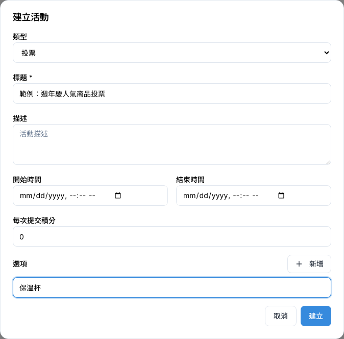
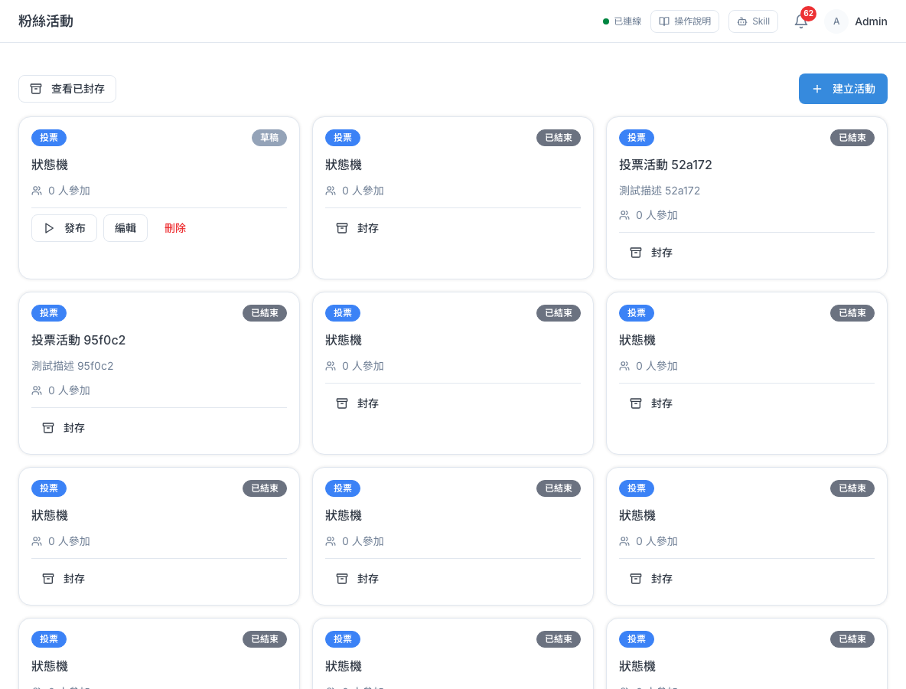
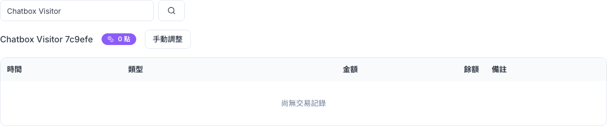
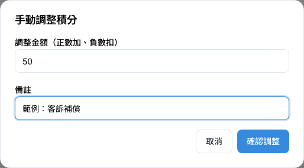

CHAPTER 11 · 行銷與渠道
粉絲活動
在後台準備投票、表單、競猜三種互動活動，查看參加紀錄、抽出中獎者，並幫客戶手動加點或扣點。
1 這頁能做什麼
「粉絲活動」是讓客戶跟品牌互動的小活動，例如「選出你最愛的商品」投票、「留下資料抽好禮」表單、「猜猜看答案」競猜。你可以在後台設計活動、看誰參加、抽出中獎者，也可以替客戶加點、扣點。側欄「行銷與渠道 > 粉絲活動」底下有三個選單：活動管理、提交紀錄、積分管理。
⚠️
目前狀態：客戶還沒有地方可以參加活動。後台可以建立和發布活動，但給客戶參加的頁面還沒有開放，所以發布後「參加人數」會一直是 0，「提交紀錄」也會是空的，抽獎與活動送點數暫時用不到。現在真正能用的是「積分管理」的手動調整點數。你可以先把活動建成草稿準備好，等客戶入口開放後再發布。
這一章的功能需要管理員開給你「檢視粉絲活動」權限才看得到；要建立活動、抽獎或調整點數，還要有「管理粉絲活動」權限。
2 三種活動怎麼選
建立活動時第一個要選的就是「類型」。三種類型差在「客戶要做什麼」：
| 類型 | 適合用在 | 你要設定的內容 | 客戶要做的事 |
|---|---|---|---|
| 投票 | 人氣票選、新品口味調查 | 一組「選項」，例如：保溫杯、帆布袋 | 從選項裡挑一個 |
| 表單 | 報名、留資料抽獎、問卷 | 一組「欄位」，例如：姓名、電話、生日 | 把欄位填完送出 |
| 競猜 | 有獎徵答、猜謎 | 一組「選項」，並勾出哪個是「正確」答案 | 選出答案，系統會算分數 |
ℹ️
類型只能在建立時選，建好之後就不能改。如果選錯了，刪掉草稿重建一個就好。
3 建立活動
先把活動內容準備好。新建的活動一律是「草稿」，客戶看不到，你可以隨時修改。
- 側欄點「粉絲活動 > 活動管理」，按右上角「建立活動」。
- 在「類型」選投票、表單或競猜。
- 填「標題」（必填），需要的話再填「描述」、「開始時間」、「結束時間」和「每次提交積分」。
- 投票、競猜：在「選項」輸入每個選項，按「新增」加一列。競猜要在正確答案旁勾「正確」。
- 表單：在「欄位」每一列填「欄位 key」和「顯示名稱」，選型態，必要時勾「必填」。
- 按「建立」。活動會以「草稿」出現在列表上。

| 欄位 | 說明 |
|---|---|
| 類型 | 投票、表單或競猜，建好後不能改。 |
| 標題 | 活動名稱，必填，最多 200 字。 |
| 描述 | 活動說明，例如規則、獎品。 |
| 開始時間／結束時間 | 活動開放的期間。結束時間要晚於開始時間，不然存不了。 |
| 每次提交積分 | 客戶每參加一次可以拿到幾點，不送點就填 0。 |
| 選項（投票、競猜） | 每列一個選項，空白的列會自動略過。競猜要勾出「正確」答案。 |
| 欄位（表單） | 「欄位 key」是系統用的英文代號（例如 name、phone），每列不要重複；「顯示名稱」是客戶看到的文字；型態有文字、多行、Email、電話、日期、選單。 |
⚠️
填表單時請注意三件事：
1. 欄位型態先不要選「選單」：目前沒有地方填選單的選項，建出來會是空的。需要讓客戶選擇時，改用投票活動。
2. 每個欄位的「欄位 key」和「顯示名稱」都要填。只填一個的那列，按「建立」後會直接消失，系統不會提醒。
3. 「每次提交積分」請填 0 或正數，不要填負數。
1. 欄位型態先不要選「選單」：目前沒有地方填選單的選項，建出來會是空的。需要讓客戶選擇時，改用投票活動。
2. 每個欄位的「欄位 key」和「顯示名稱」都要填。只填一個的那列，按「建立」後會直接消失，系統不會提醒。
3. 「每次提交積分」請填 0 或正數，不要填負數。
ℹ️
投票和競猜至少要放兩個選項，競猜要記得勾正確答案。系統不會替你檢查，建立前自己看一遍。
4 活動狀態與按鈕
每張卡片右上角是狀態，底下的按鈕會跟著狀態改變。活動照這個順序往前走：

| 狀態 | 代表什麼 | 可以按的按鈕 |
|---|---|---|
| 草稿 | 還在準備，客戶看不到 | 「發布」「編輯」「刪除」 |
| 進行中 | 已經發布 | 「結束」 |
| 已結束 | 活動停止，紀錄還在 | 「封存」 |
| 已封存 | 收起來，不出現在列表 | 「取消封存」（回到已結束） |
- 要修改內容：只有「草稿」可以按「編輯」，改完按「儲存」。發布後就不能改了。
- 要收起已結束的活動：按「封存」，確認後活動就從列表消失，參加紀錄會保留。
- 要找回封存的活動：按左上角「查看已封存」，在該活動按「取消封存」；按「返回活動列表」回到原本的清單。
⚠️
「發布」和「結束」按下去就立刻生效，不會再問你一次。結束之後沒辦法重新開始，只能再建一個新活動。「刪除」只有草稿才有，刪了就救不回來。
ℹ️
活動清單會列出所有活動，不會只顯示前幾筆。用不到的活動結束後記得「封存」，清單比較好找。
5 提交紀錄與抽獎
「提交紀錄」用來看某個活動有誰參加、填了什麼，也可以從參加者裡隨機抽出中獎者。客戶入口開放之前，這裡都會顯示「尚無提交記錄」。
- 側欄點「粉絲活動 > 提交紀錄」。
- 在「選擇活動」下拉選單挑一個活動，下方會出現參加者表格。
- 要抽獎：按「抽獎」，在「隨機抽獎」視窗填「抽出人數」，再按視窗裡的「抽獎」。中獎名單會顯示在視窗下方，表格的「中獎」欄也會標出來。
| 表格欄位 | 說明 |
|---|---|
| 聯絡人 | 參加的客戶 |
| 提交時間 | 客戶送出的時間 |
| 答案摘要 | 目前只顯示選了幾個選項、填了幾個欄位，看不到實際內容 |
| 得分 | 只有競猜活動才有 |
| 中獎 | 抽中的人會顯示「中獎」 |
| 積分 | 這次參加拿到的點數 |
⚠️
抽獎結果會直接存下來，不能收回。同一個視窗再按一次「抽獎」，會從還沒中獎的人裡再多抽一批，不是重抽。按之前先確認人數。另外，封存的活動不會出現在「選擇活動」裡，要抽獎請在封存前完成。
6 積分管理
查詢某位客戶目前有幾點、點數怎麼來的，也可以手動加點（例如客訴補償）或扣點。
- 側欄點「粉絲活動 > 積分管理」。
- 在搜尋框輸入客戶的名稱、電話或 Email，按 Enter 或放大鏡。
- 只有一位符合時，系統會直接帶出這位客戶。有好幾位符合時，畫面會顯示「有 N 位符合，請選擇要調整的聯絡人」，並列出每一位的名稱、電話與 Email，點選你要的那一位。
- 核對畫面上的客戶名稱、電話與 Email，確定是你要找的人。名稱旁邊是目前點數，下方是交易紀錄。
- 按「手動調整」，在「調整金額（正數加、負數扣）」填數字，例如加 50 點填
50、扣 20 點填-20。 - 在「備註」寫原因，例如「客訴補償」，之後查紀錄才知道為什麼。
- 視窗上方會再顯示一次「調整對象」，確認無誤後按「確認調整」。視窗關閉、點數更新就是成功了。

ℹ️
符合的人太多（超過 20 位）時只會列出前 20 位，畫面會提醒你輸入更完整的電話或 Email 再搜尋。搜尋不到人時會顯示「找不到符合的聯絡人」。
按「確認調整」後如果沒有成功，視窗裡會用紅字顯示原因（例如你沒有調整權限），請依提示處理或找管理員確認，不要一直重按。
按「確認調整」後如果沒有成功，視窗裡會用紅字顯示原因（例如你沒有調整權限），請依提示處理或找管理員確認，不要一直重按。

| 交易類型 | 代表什麼 |
|---|---|
| 活動參與 | 客戶參加活動自動拿到的點數 |
| 人工調整 | 同事用「手動調整」加的或扣的點數 |
| 兌換扣除 | 保留給之後的點數兌換功能，目前不會出現 |
ℹ️
調整金額只能是整數，輸入小數會被自動去掉小數點後面的數字。交易紀錄會列出這位客戶的所有紀錄。